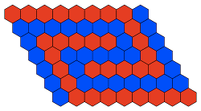
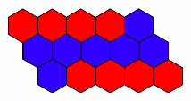

| Safe Haskell | None |
|---|
Algorithms.BF.Main
Description
Author: Alexander S. Green
An implementation of the Boolean Formula algorithm, applied to finding whether a winning strategy exists in a game of Hex.
 
The algorithm consists of eigenvalue analysis using phase estimation, acting on an oracle that defines a quantum walk over the NAND graph representation of a game of Hex, for a given size of board.
The implementation defines the NAND graph of a game of Hex by adding a few extra nodes to a graph representing pieces being played during a game of Hex. An extra node is added to each leaf node that represents a completed game of Hex, for which the red player has won, as well as two extra nodes being added below the root node.
The general form of the algorithm is described in:
- A. Ambainis, A. M. Childs, B. W. Reichardt, R. Spalek, and S. Zhang. "Any AND-OR formula of size N can be evaluated in time N1/2+o(1) on a quantum computer." SIAM J. Comput., 39:2513–2530, April 2010. See also http://www.ucw.cz/~robert/papers/andor-siamjc.pdf.
- A. M. Childs, B. W. Reichardt, R. Spalek, and S. Zhang. "Every NAND formula of size N can be evaluated in time N1/2+o(1) on a quantum computer" 2007. http://arxiv.org/abs/quant-ph/0703015.
The present implementation is based on detailed algorithm and oracle specifications that were provided to us by the IARPA QCS program and written by Patrick Henry.
Modules:
- Algorithms.BF.Main: Command line interface.
- Algorithms.BF.BooleanFormula: Implementation of the various quantum circuits that make up the boolean formula algorithm.
- Algorithms.BF.Hex: Implementation of the circuits for determining which player has won a completed game of Hex.
- Algorithms.BF.QuantumIf: Introduces a simple way of defining "boolean statements" acting over qubits.
- Algorithms.BF.HexBoard: Code for drawing Hex boards in graphical format.
- Algorithms.BF.Testing: Testing facilities for the boolean formula algorithm, and some auxiliary function definitions.
- data WhatToDo
- = OutputCircuit
- | Demo
- | HexBoard
- data WhatPart
- = WholeCircuit
- | U
- | Oracle
- | Hex
- | Checkwin_Red
- | Diffuse
- | Walk
- | Undo_Oracle
- data OracleSize
- data Options = Options {
- what :: WhatToDo
- part :: WhatPart
- format :: Format
- oracle_size :: OracleSize
- oracle_init :: [Int]
- hex :: HexCircuit
- gatebase :: GateBase
- defaultOptions :: Options
- options :: [OptDescr (Options -> IO Options)]
- part_enum :: [(String, WhatPart)]
- oracle_enum :: [(String, Maybe OracleSize)]
- dopts :: [String] -> IO Options
- usage :: IO ()
- main :: IO ()
- check_options :: Options -> Options
- getOracle :: OracleSize -> [Int] -> BooleanFormulaOracle
- output_part :: WhatPart -> Format -> GateBase -> BooleanFormulaOracle -> IO ()
- demo_part :: WhatPart -> Format -> BooleanFormulaOracle -> IO ()
- valid_sizes :: [Int]
- valid_size :: Int -> Bool
- createCustom :: Int -> Int -> Int -> OracleSize
- getCustom :: String -> Maybe OracleSize
Command line interface
This module provides a command line interface for the Boolean Formula algorithm. This allows the user, for example, to plug in different oracles, show different parts of the circuit, run a demo, and select different output formats.
Option processing
An enumeration type for determining the action that should be taken when the executable is run.
Constructors
| OutputCircuit | Output the circuit. |
| Demo | Run a demo of the circuit, which is different for the various parts of the algorithm. |
| HexBoard | Output a representation of the moves already made for the defined oracle, i.e. a partially filled Hex Board. |
An enumeration type for determining what the main function should do.
Constructors
| WholeCircuit | The whole circuit. |
| U | Only one iteration of the U from EXP_U circuit. |
| Oracle | Only the Oracle circuit. |
| Hex | Only the Hex circuit. |
| Checkwin_Red | Only the Checkwin_Red circuit, i.e. including Flood_Fill. |
| Diffuse | Only the Diffuse circuit. |
| Walk | Only the Walk circuit. |
| Undo_Oracle | Only the Undo_Oracle circuit. |
data OracleSize Source
An enumeration type for selecting an oracle size.
Constructors
| Full | The oracle for a 9 by 7 Hex board, with a 189 qubit phase estimation register. |
| Small | The oracle for a 5 by 3 Hex board, with a 4 qubit phase estimation register |
| Custom Int Int Int | A custom oracle. |
Instances
A data type to hold values set by command line options.
Constructors
| Options | |
Fields
| |
defaultOptions :: OptionsSource
The default options, which correspond to a Preview of the entire circuit for the small oracle.
options :: [OptDescr (Options -> IO Options)]Source
The list of command line options, in the format required by getOpt.
oracle_enum :: [(String, Maybe OracleSize)]Source
An enumeration of available oracles and their names.
dopts :: [String] -> IO OptionsSource
Process argv-style command line options into an Options structure.
The BF main function
check_options :: Options -> OptionsSource
Check that the given options are valid. This currently is only required to check that the list of moves already made, is valid for the given size of oracle.
getOracle :: OracleSize -> [Int] -> BooleanFormulaOracleSource
Convert an OracleSize, and a list of played positions, into an actual oracle.
output_part :: WhatPart -> Format -> GateBase -> BooleanFormulaOracle -> IO ()Source
This function defines what should be output for each part of the circuit.
demo_part :: WhatPart -> Format -> BooleanFormulaOracle -> IO ()Source
This function defines what should be done for a demo of each part of the circuit.
valid_sizes :: [Int]Source
An infinite list of all numbers that are one less than an integer power of 2.
valid_size :: Int -> BoolSource
Return True if the given number is one less than an integer power of 2.
createCustom :: Int -> Int -> Int -> OracleSizeSource
Create a custom sized oracle, by checking the given x,y, and t sizes are valid.
getCustom :: String -> Maybe OracleSizeSource
Parse a string defining a custom oracle size.